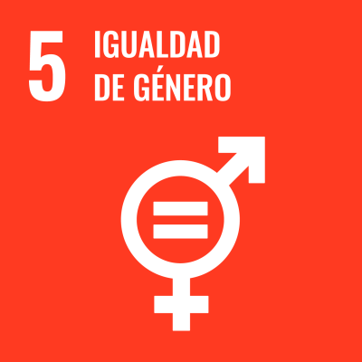

CONCRECCIÓN CURRICULAR de la SdA
1. Intención educativa
Justificación de su desarrollo
El desarrollo de un videojuego no solo permite a los alumnos y alumnas aplicar los conocimientos adquiridos de programación en Java, sino que también ofrece la oportunidad de poner en práctica habilidades como el trabajo en equipo y la gestión de proyectos.
En el aspecto técnico, la creación de videojuegos implica comprender diversos aspectos de su desarrollo, entre los que se incluyen, además de la lógica de programación, el diseño de interfaces de usuario, el diseño y animación de elementos 2D o la integración de elementos multimedia, proporcionando una experiencia educativa integral.
Con todo ello, se pretende involucrar a los y las estudiantes en un proyecto dinámico y atractivo que los motive a profundizar en su aprendizaje y a desarrollar una actitud proactiva hacia la innovación y la creatividad en la programación.
Impacto esperado
Fortalecimiento de competencias técnicas y habilidades interpersonales, como la comunicación y colaboración en equipo.
Relación con los ODS y retos del siglo XXI
 |
|
|  |
|
 |
|
Obra publicada con Licencia Creative Commons Reconocimiento Compartir igual 4.0